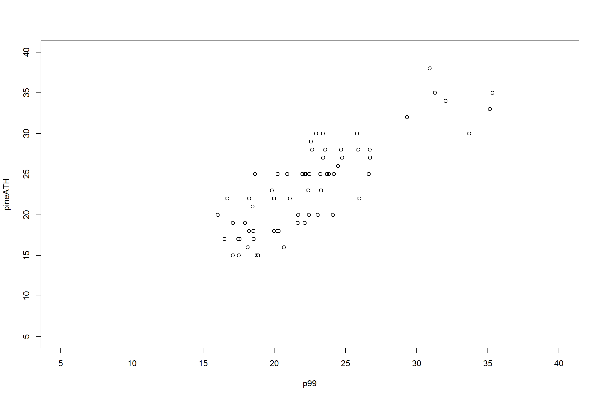
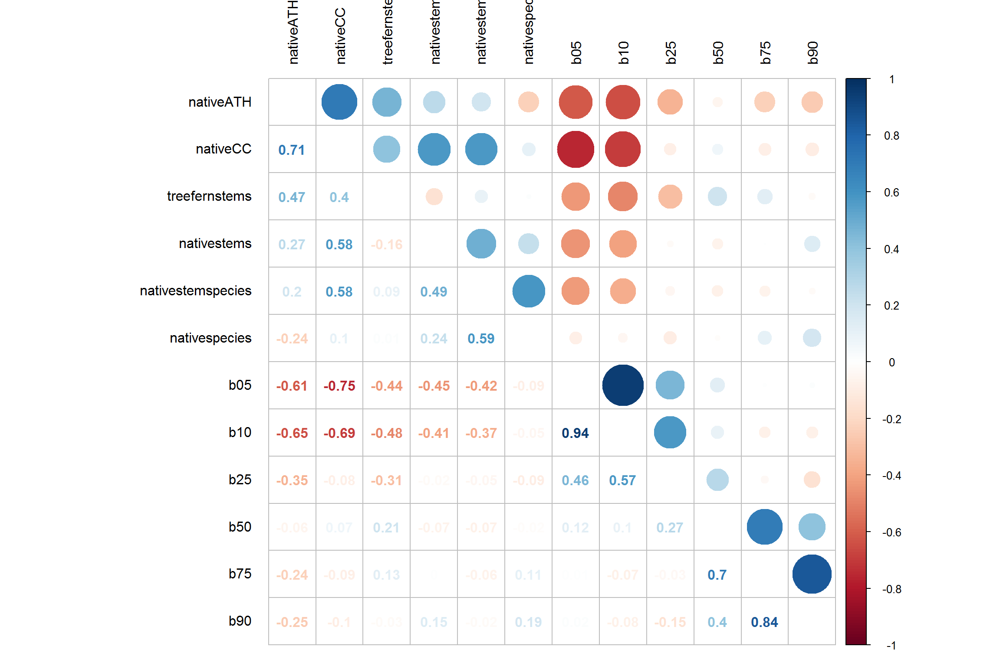
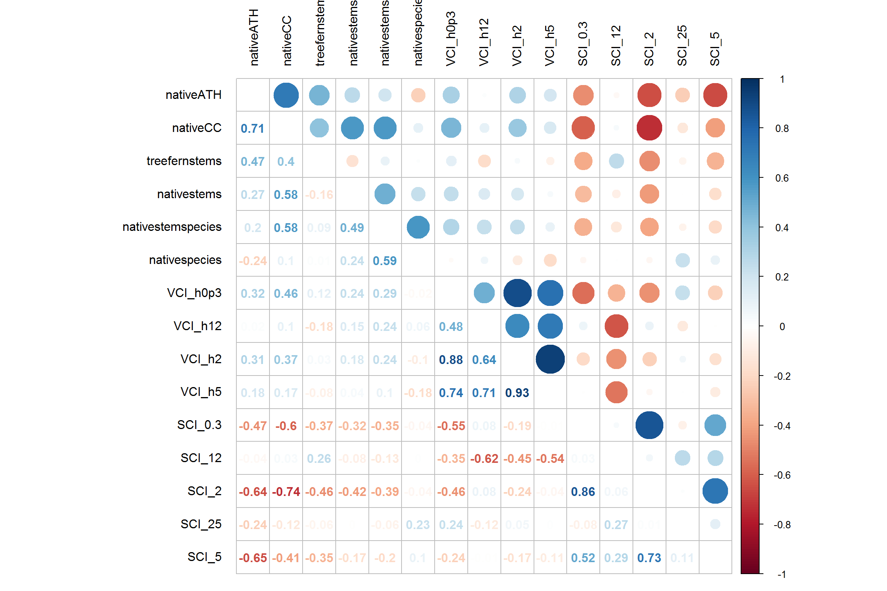
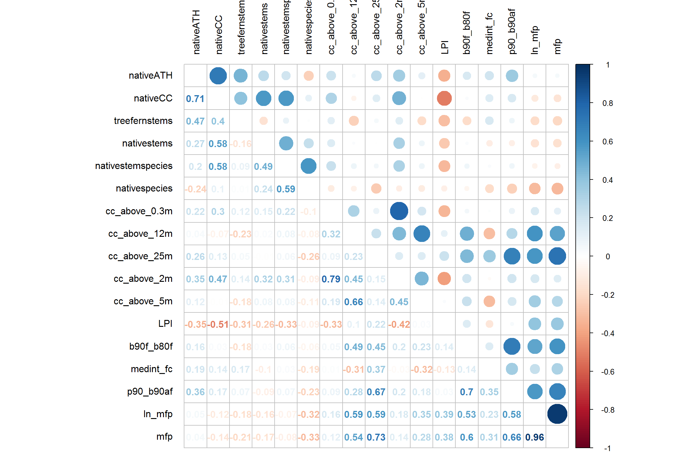
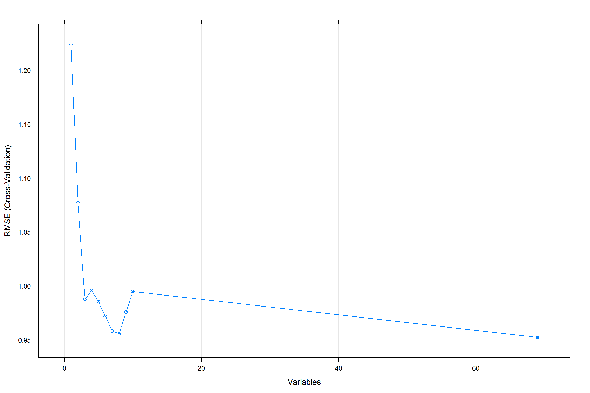
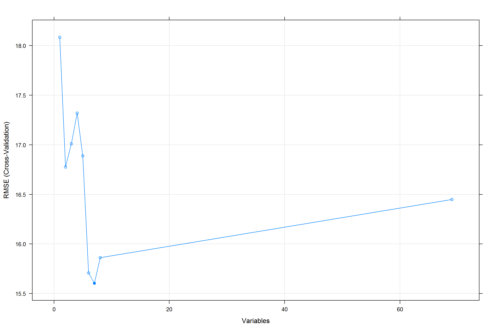
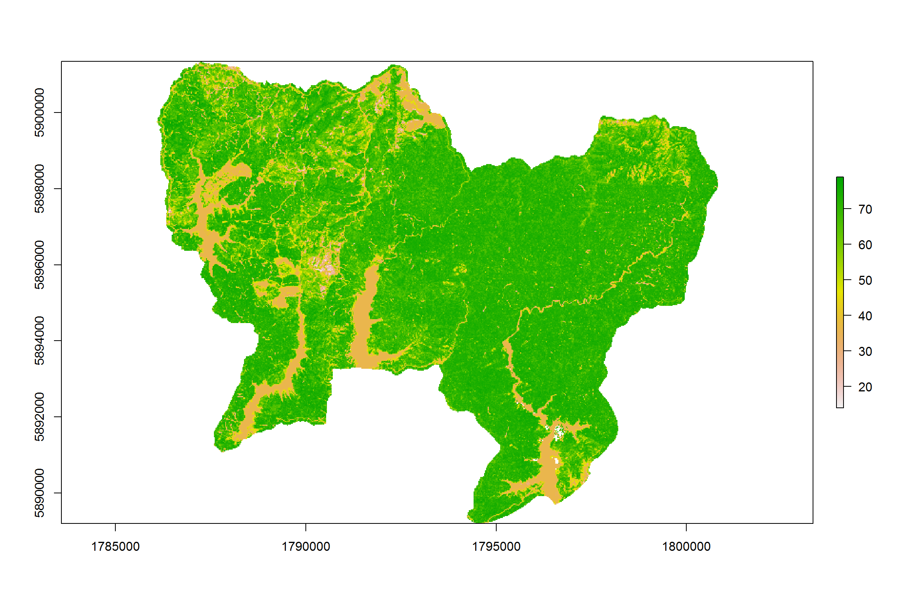

initial-analysis
jonathandash
2018-08-27
Last updated: 2018-08-28
workflowr checks: (Click a bullet for more information)-
✔ R Markdown file: up-to-date
Great! Since the R Markdown file has been committed to the Git repository, you know the exact version of the code that produced these results.
-
✔ Environment: empty
Great job! The global environment was empty. Objects defined in the global environment can affect the analysis in your R Markdown file in unknown ways. For reproduciblity it’s best to always run the code in an empty environment.
-
✔ Seed:
set.seed(20180827)The command
set.seed(20180827)was run prior to running the code in the R Markdown file. Setting a seed ensures that any results that rely on randomness, e.g. subsampling or permutations, are reproducible. -
✔ Session information: recorded
Great job! Recording the operating system, R version, and package versions is critical for reproducibility.
-
Great! You are using Git for version control. Tracking code development and connecting the code version to the results is critical for reproducibility. The version displayed above was the version of the Git repository at the time these results were generated.✔ Repository version: 7505f73
Note that you need to be careful to ensure that all relevant files for the analysis have been committed to Git prior to generating the results (you can usewflow_publishorwflow_git_commit). workflowr only checks the R Markdown file, but you know if there are other scripts or data files that it depends on. Below is the status of the Git repository when the results were generated:
Note that any generated files, e.g. HTML, png, CSS, etc., are not included in this status report because it is ok for generated content to have uncommitted changes.Ignored files: Ignored: .Rproj.user/ Ignored: normalised-als/ Untracked files: Untracked: code/Calibration-extraction-AndyG.R Untracked: code/SCI.R Untracked: code/horohoro-lidar-metrics.R Untracked: data/RecceSurvey Data summary Hunuas Watercare.xlsx Untracked: data/allmetrics.csv Untracked: data/field-data.csv Untracked: docs/figure/als-metrics.Rmd/ Untracked: out/ Unstaged changes: Modified: .gitignore
Expand here to see past versions:
| File | Version | Author | Date | Message |
|---|---|---|---|---|
| Rmd | 7505f73 | jonathandash | 2018-08-28 | Update to include ALS analysis |
| html | d3da9af | jonathandash | 2018-08-27 | Build site. |
| Rmd | db70f04 | jonathandash | 2018-08-27 | Predictor variable selection updated and new link for index |
| html | d209b07 | jonathandash | 2018-08-27 | Build site. |
| Rmd | aa58a02 | jonathandash | 2018-08-27 | Predictor variable selection added |
| html | 02eb0b0 | jonathandash | 2018-08-27 | Build site. |
| Rmd | b802c85 | jonathandash | 2018-08-27 | Add correlation matrix plots |
| html | 0a2e8ec | jonathandash | 2018-08-27 | Build site. |
| Rmd | 7720d15 | jonathandash | 2018-08-27 | Add my first analysis |
Introduction
This analysis is designed to investigate the ALS metrics for the field plots and identify important predictors. Once these are produced we generate useful metrics and produce initial maps.
#### Setup project ####
library(here)
library(tidyverse)
library(corrplot)
library(randomForest)
library(caret)
library(party)
library(raster)
#### Read data and merge ####
# Read field data
f.df<-read.csv(here('data', 'field-data.csv'))
# Read Grant's lidar metrics
als.df<-read.csv(here('data', 'allmetrics.csv'))
#glimpse(als.df)
#glimpse(f.df)
# looks like plot names are not consistent
#head(als.df)
#head(f.df)
# Check with GP that these als linaes are logical... If so proceed bying making a linking identifier.
# GP confirmed on Slack message
# merge datasets
als.df$identifier<-paste('RR', als.df$PlotID, sep='') # Checked with GP and seems reasonable
ref<-merge(f.df, als.df, by.x = 'plot', by.y = 'identifier')
#str(ref)#### review correlations ####
# Make a logic check plot the top height against ALS metrics
plot(pineATH ~ p99, data = ref, xlim = c(5,40), ylim = c(5,40))
Expand here to see past versions of unnamed-chunk-3-1.png:
| Version | Author | Date |
|---|---|---|
| 02eb0b0 | jonathandash | 2018-08-27 |
## doesn't look great but they may not know how to measure and calculate top height
plot(pineage~ p99, data = ref, xlim = c(5,40), ylim = c(5,40))# limited variability within a big range of ages... may need review
preds<-ref[ , 33:110] # define predictors
stand.preds<-ref[ , c(2,3,4,5,6,7,8)] # define predictors related to plantation stand structure. This could
# allow us to test the hypothesis that ALS metrics are no better than stand structure for prediction.Check correlation matrix for the stand variables
# Plot correlations for stand variables
#png(here('out', 'cor-matrix-stand-mets.png'), width = 20, height = 20,
# units = "cm", res = 500, pointsize = 12,
# type = "cairo")
M<-cor(ref[ ,c(9,10,11,12,14,15, 2:8)])
corrplot.mixed(M, upper = "circle", lower = "number",
tl.pos = "lt", tl.col = "black", tl.offset=1) # too many variables not usefulExpand here to see past versions of unnamed-chunk-4-1.png:
| Version | Author | Date |
|---|---|---|
| 02eb0b0 | jonathandash | 2018-08-27 |
#dev.off()
png(here('out', 'cor-matrix-stand-mets.png'), width = 20, height = 20,
units = "cm", res = 500, pointsize = 12,
type = "cairo")
M<-cor(ref[ ,c(9,10,11,12,14,15, 2:8)])
corrplot.mixed(M, upper = "circle", lower = "number",
tl.pos = "lt", tl.col = "black", tl.offset=1)
dev.off()png
2 Plot correlation matrix for height percentiles
# Plot correlations for height percentiles
#png(here('out', 'cor-matrix-ht-pct.png'), width = 25, height = 25,
# units = "cm", res = 500, pointsize = 12,
# type = "cairo")
M<-cor(ref[ ,c(9,10,11,12,14,15, 33:44)])
corrplot.mixed(M, upper = "circle", lower = "number",
tl.pos = "lt", tl.col = "black", tl.offset=1) # too many variables not useful
Expand here to see past versions of unnamed-chunk-5-1.png:
| Version | Author | Date |
|---|---|---|
| 02eb0b0 | jonathandash | 2018-08-27 |
#dev.off()
png(here('out', 'cor-matrix-ht-pct.png'), width = 25, height = 25,
units = "cm", res = 500, pointsize = 12,
type = "cairo")
M<-cor(ref[ ,c(9,10,11,12,14,15, 33:44)])
corrplot.mixed(M, upper = "circle", lower = "number",
tl.pos = "lt", tl.col = "black", tl.offset=1) # too many variables not useful
dev.off()png
2 # Plot correlations for bincentiles
#png(here('out', 'cor-matrix-ht-binc.png'), width = 20, height = 20,
# units = "cm", res = 500, pointsize = 12,
# type = "cairo")
M<-cor(ref[ ,c(9,10,11,12,14,15, 45:50)])
corrplot.mixed(M, upper = "circle", lower = "number",
tl.pos = "lt", tl.col = "black", tl.offset=1) # too many variables not useful
Expand here to see past versions of unnamed-chunk-6-1.png:
| Version | Author | Date |
|---|---|---|
| 02eb0b0 | jonathandash | 2018-08-27 |
#dev.off()
# Plot correlations for bincentiles
png(here('out', 'cor-matrix-ht-binc.png'), width = 20, height = 20,
units = "cm", res = 500, pointsize = 12,
type = "cairo")
M<-cor(ref[ ,c(9,10,11,12,14,15, 45:50)])
corrplot.mixed(M, upper = "circle", lower = "number",
tl.pos = "lt", tl.col = "black", tl.offset=1) # too many variables not useful
dev.off()png
2 Correlation matrix for height deciles
# Plot correlations for deciles
#png(here('out', 'cor-matrix-ht-deciles.png'), width = 20, height = 20,
# units = "cm", res = 500, pointsize = 12,
# type = "cairo")
M<-cor(ref[ ,c(9,10,11,12,14,15, 51:57)])
corrplot.mixed(M, upper = "circle", lower = "number",
tl.pos = "lt", tl.col = "black", tl.offset=1) # too many variables not usefulExpand here to see past versions of unnamed-chunk-7-1.png:
| Version | Author | Date |
|---|---|---|
| 02eb0b0 | jonathandash | 2018-08-27 |
#dev.off()
png(here('out', 'cor-matrix-ht-deciles.png'), width = 20, height = 20,
units = "cm", res = 500, pointsize = 12,
type = "cairo")
M<-cor(ref[ ,c(9,10,11,12,14,15, 51:57)])
corrplot.mixed(M, upper = "circle", lower = "number",
tl.pos = "lt", tl.col = "black", tl.offset=1) # too many variables not useful
dev.off()png
2 Correlation matrix for cov - voxels
# Plot correlations for voxels_cov
#png(here('out', 'cor-matrix-vox_cov.png'), width = 20, height = 20,
# units = "cm", res = 500, pointsize = 12,
# type = "cairo")
M<-cor(ref[ ,c(9,10,11,12,14,15, 72:77)])
corrplot.mixed(M, upper = "circle", lower = "number",
tl.pos = "lt", tl.col = "black", tl.offset=1) # too many variables not useful
Expand here to see past versions of unnamed-chunk-8-1.png:
| Version | Author | Date |
|---|---|---|
| 02eb0b0 | jonathandash | 2018-08-27 |
#dev.off()
png(here('out', 'cor-matrix-vox_cov.png'), width = 20, height = 20,
units = "cm", res = 500, pointsize = 12,
type = "cairo")
M<-cor(ref[ ,c(9,10,11,12,14,15, 72:77)])
corrplot.mixed(M, upper = "circle", lower = "number",
tl.pos = "lt", tl.col = "black", tl.offset=1) # too many variables not useful
dev.off()png
2 Correlation matric for VCI - SCI voxel metrics
# Plot correlations for voxels_VCI_SCI
#png(here('out', 'cor-matrix-vox_VCI_SCI.png'), width = 20, height = 20,
# units = "cm", res = 500, pointsize = 12,
# type = "cairo")
M<-cor(ref[ ,c(9,10,11,12,14,15, 78:86)])
corrplot.mixed(M, upper = "circle", lower = "number",
tl.pos = "lt", tl.col = "black", tl.offset=1) # too many variables not useful
Expand here to see past versions of unnamed-chunk-9-1.png:
| Version | Author | Date |
|---|---|---|
| 02eb0b0 | jonathandash | 2018-08-27 |
#dev.off()
png(here('out', 'cor-matrix-vox_VCI_SCI.png'), width = 20, height = 20,
units = "cm", res = 500, pointsize = 12,
type = "cairo")
M<-cor(ref[ ,c(9,10,11,12,14,15, 78:86)])
corrplot.mixed(M, upper = "circle", lower = "number",
tl.pos = "lt", tl.col = "black", tl.offset=1) # too many variables not useful
dev.off()png
2 More correlations for Voxel metrics
# Plot correlations for voxels_cc
#png(here('out', 'cor-matrix-vox_cc.png'), width = 25, height = 25,
# units = "cm", res = 500, pointsize = 12,
# type = "cairo")
M<-cor(ref[ ,c(9,10,11,12,14,15, 87:97)])
corrplot.mixed(M, upper = "circle", lower = "number",
tl.pos = "lt", tl.col = "black", tl.offset=1) # too many variables not useful
Expand here to see past versions of unnamed-chunk-10-1.png:
| Version | Author | Date |
|---|---|---|
| d209b07 | jonathandash | 2018-08-27 |
#dev.off()
# Plot correlations for voxels_cc
png(here('out', 'cor-matrix-vox_cc.png'), width = 25, height = 25,
units = "cm", res = 500, pointsize = 12,
type = "cairo")
M<-cor(ref[ ,c(9,10,11,12,14,15, 87:97)])
corrplot.mixed(M, upper = "circle", lower = "number",
tl.pos = "lt", tl.col = "black", tl.offset=1) # too many variables not useful
dev.off()png
2 More correlations for Voxel metrics
# Plot correlations for voxels_cc
#png(here('out', 'cor-matrix-vox_Pcc-end.png'), width = 25, height = 25,
# units = "cm", res = 500, pointsize = 12,
# type = "cairo")
M<-cor(ref[ ,c(9,10,11,12,14,15, 98:110)])
corrplot.mixed(M, upper = "circle", lower = "number",
tl.pos = "lt", tl.col = "black", tl.offset=1) # too many variables not useful#dev.off()
png(here('out', 'cor-matrix-vox_Pcc-end.png'), width = 25, height = 25,
units = "cm", res = 500, pointsize = 12,
type = "cairo")
M<-cor(ref[ ,c(9,10,11,12,14,15, 98:110)])
corrplot.mixed(M, upper = "circle", lower = "number",
tl.pos = "lt", tl.col = "black", tl.offset=1) # too many variables not useful
dev.off()png
2 Looks like a lot of the voxel metrics are correlated with themselves and some conventional metrics like bincentiles.
plot(b10~ SCI_2, data = ref) # looks like a lot of the voxel metrics are highly correlated with the lowerExpand here to see past versions of unnamed-chunk-12-1.png:
| Version | Author | Date |
|---|---|---|
| d209b07 | jonathandash | 2018-08-27 |
The response variables suggested by Richard Ewans in an e-mail response are listed below. Suggest these arereviewed by Thomas at a later date.
- Average top height of native subcanopy - (Column I; native ATH)
- Canopy cover of native subcanopy - (Column J; nativeCC)
- Number of tree fern stems - (Column K; treefernstems)
- Number of native woody stems (other than tree ferns) - (Column L; nativestems)
- Number of different native woody species higher than 2m (including tree ferns) - (Column N; nativestemspecies)
- Total number of different native species - (Column O; nativespecies)
nativeATH nativeCC treefernstems nativestems nativestemspecies
1 3 35 2 12 7
2 6 90 11 11 7
3 3 90 1 20 9
4 5 85 16 9 5
5 5 80 6 27 7
6 5 95 6 32 10
nativespecies
1 12
2 9
3 13
4 9
5 9
6 12[1] 70[1] 70We used Caret for identifying important variables and feature selection. Do this for or the height of native subcanopy first.
#### Rank feature importance ####
# Native ATH first
mod.df<-cbind(responses$nativeATH, preds)
colnames(mod.df)[colnames(mod.df) == 'responses$nativeATH'] <- 'nativeATH'
rf_fit_nat_ATH<-train(nativeATH ~ .,
data = mod.df,
method = "ranger")
set.seed(7)
# prepare training scheme
control <- trainControl(method="repeatedcv", number=10, repeats=5)
# train the model
model <- train(nativeATH~., data=mod.df, method="cforest", trControl=control)
# estimate variable importance
importance <- varImp(model, scale=FALSE)
# summarize importance
print(importance)cforest variable importance
only 20 most important variables shown (out of 78)
Overall
dns 0.920960
c01 0.424502
SCI_5 0.289132
p25 0.236415
PccFrom_2_m 0.037610
b10 0.030681
VCI_h0p3 0.025837
SCI_2 0.018784
c00 0.016428
int_p99 0.015318
ske 0.010497
VCI_h2 0.010464
cov_2 0.008894
int_ske 0.007669
b25 0.007172
int_max 0.007166
b90 0.006950
H_SVM_med_fr 0.006833
PccFrom_5_m 0.006515
H_SVM_D_med_ar 0.006512# plot importance
plot(importance)Expand here to see past versions of unnamed-chunk-14-1.png:
| Version | Author | Date |
|---|---|---|
| d209b07 | jonathandash | 2018-08-27 |
#### Feature Selection ####
set.seed(7)
# define the control using a random forest selection function
control <- rfeControl(functions=rfFuncs, method="cv", number=10)
# run the RFE algorithm
results <- rfe(mod.df[,2:70], mod.df[,1], sizes=c(1:10), rfeControl=control)
# summarize the results
print(results)
Recursive feature selection
Outer resampling method: Cross-Validated (10 fold)
Resampling performance over subset size:
Variables RMSE Rsquared MAE RMSESD RsquaredSD MAESD Selected
1 1.2239 0.3169 1.0104 0.2151 0.2525 0.1392
2 1.0772 0.4231 0.9077 0.3062 0.2319 0.2343
3 0.9878 0.5097 0.8399 0.3486 0.2100 0.2813
4 0.9958 0.5194 0.8536 0.3309 0.2661 0.2797
5 0.9853 0.5130 0.8396 0.3275 0.2536 0.2901
6 0.9716 0.5222 0.8350 0.2822 0.2253 0.2513
7 0.9582 0.5222 0.8076 0.3157 0.2314 0.2835
8 0.9557 0.5236 0.8067 0.3075 0.2193 0.2708
9 0.9759 0.5000 0.8295 0.3134 0.2412 0.2869
10 0.9949 0.4891 0.8392 0.3097 0.2246 0.2793
69 0.9524 0.5357 0.8159 0.3077 0.2481 0.2947 *
The top 5 variables (out of 69):
dns, SCI_2, c01, SCI_5, p25# list the chosen features
predictors(results) [1] "dns" "SCI_2" "c01" "SCI_5"
[5] "p25" "b10" "b25" "d01"
[9] "b05" "PccFrom_5_m" "c00" "cov_5"
[13] "VCI_h0p3" "PccFrom_2_m" "cov_2" "p10"
[17] "d00" "int_max" "VCI_h2" "int_p99"
[21] "SCI_0.3" "int_ske" "ske" "int_std"
[25] "b90" "LPI" "cov_03" "int_p75"
[29] "int_qav" "c03" "cc_above_2m" "cov_25"
[33] "mfp" "c02" "cc_above_25m" "int_p90"
[37] "SCI_25" "int_p10" "cov_12" "p90_b90af"
[41] "SCI_12" "b75" "int_p25" "p99"
[45] "int_p50" "PccFrom_25_m" "kur" "cc_above_12m"
[49] "p90" "b50" "avg" "cc_above_5m"
[53] "d03" "p05" "int_p05" "p75"
[57] "qav" "int_kur" "int_avg" "p50"
[61] "ln_mfp" "medint_fc" "b90f_b80f" "d02"
[65] "std" "VCI_h12" "PccFrom_12_m" "cc_above_0.3m"
[69] "VCI_h5" # plot the results
plot(results, type=c("g", "o"))
Expand here to see past versions of unnamed-chunk-14-2.png:
| Version | Author | Date |
|---|---|---|
| d209b07 | jonathandash | 2018-08-27 |
Now use these predictors to model native understorey height by fitting a RF model with the selected predictors.
Random Forest
70 samples
5 predictor
No pre-processing
Resampling: Bootstrapped (25 reps)
Summary of sample sizes: 70, 70, 70, 70, 70, 70, ...
Resampling results across tuning parameters:
mtry splitrule RMSE Rsquared MAE
2 variance 0.9592306 0.5293575 0.7828987
2 extratrees 0.9588135 0.5368442 0.7734945
3 variance 0.9698744 0.5197214 0.7930516
3 extratrees 0.9487585 0.5439258 0.7675013
5 variance 0.9908640 0.5052240 0.8137463
5 extratrees 0.9357671 0.5539153 0.7588475
Tuning parameter 'min.node.size' was held constant at a value of 5
RMSE was used to select the optimal model using the smallest value.
The final values used for the model were mtry = 5, splitrule =
extratrees and min.node.size = 5.
Expand here to see past versions of unnamed-chunk-15-1.png:
| Version | Author | Date |
|---|---|---|
| d209b07 | jonathandash | 2018-08-27 |
Now use the same predictor variable selection approach for native canopy cover.
#nativeCC
mod.df<-cbind(responses$nativeCC, preds)
colnames(mod.df)[colnames(mod.df) == 'responses$nativeCC'] <- 'nativeCC'
rf_fit_nat_CC<-train(nativeCC ~ .,
data = mod.df,
method = "ranger")
# prepare training scheme
control <- trainControl(method="repeatedcv", number=10, repeats=3)
# train the model
model <- train(nativeCC~., data=mod.df, method="cforest", trControl=control)
# estimate variable importance
importance <- varImp(model, scale=FALSE)
# summarize importance
print(importance)cforest variable importance
only 20 most important variables shown (out of 78)
Overall
b05 172.2344
dns 123.4701
SCI_2 100.0653
b10 30.8670
ske 16.2886
cov_03 11.0016
SCI_0.3 10.9441
cov_2 9.0788
PccFrom_2_m 8.9216
d00 6.8042
p25 5.1325
c00 3.2555
c01 2.6032
LPI 1.8042
d01 1.5709
kur 1.2173
int_p99 0.7929
b50 0.7171
medint_fc 0.5067
VCI_h5 0.4277# plot importance
plot(importance)Expand here to see past versions of unnamed-chunk-16-1.png:
| Version | Author | Date |
|---|---|---|
| d209b07 | jonathandash | 2018-08-27 |
#### Feature Selection ####
set.seed(7)
# define the control using a random forest selection function
control <- rfeControl(functions=rfFuncs, method="cv", number=10)
# run the RFE algorithm
results <- rfe(mod.df[,2:70], mod.df[,1], sizes=c(1:8), rfeControl=control)
# summarize the results
print(results)
Recursive feature selection
Outer resampling method: Cross-Validated (10 fold)
Resampling performance over subset size:
Variables RMSE Rsquared MAE RMSESD RsquaredSD MAESD Selected
1 18.08 0.4824 13.87 8.070 0.3022 4.916
2 16.78 0.5159 12.75 7.316 0.3009 4.466
3 17.01 0.5131 12.80 7.757 0.2919 4.831
4 17.32 0.4922 13.22 7.318 0.3031 4.658
5 16.89 0.5224 13.03 6.295 0.3013 3.875
6 15.71 0.5636 12.28 6.847 0.2994 4.276
7 15.60 0.5697 12.22 6.305 0.2828 3.954 *
8 15.86 0.5489 12.54 6.234 0.2856 4.016
69 16.45 0.5318 12.91 6.233 0.3055 4.086
The top 5 variables (out of 7):
b05, dns, b10, SCI_2, p10# list the chosen features
predictors(results)[1] "b05" "dns" "b10" "SCI_2" "p10" "ske" "d01" # plot the results
plot(results, type=c("g", "o"))
Expand here to see past versions of unnamed-chunk-16-2.png:
| Version | Author | Date |
|---|---|---|
| d209b07 | jonathandash | 2018-08-27 |
Now use these predictors to model native understorey canopy cover percentage by fitting a RF model with the selected predictors.
Random Forest
70 samples
5 predictor
No pre-processing
Resampling: Bootstrapped (25 reps)
Summary of sample sizes: 70, 70, 70, 70, 70, 70, ...
Resampling results across tuning parameters:
mtry splitrule RMSE Rsquared MAE
2 variance 0.9592306 0.5293575 0.7828987
2 extratrees 0.9588135 0.5368442 0.7734945
3 variance 0.9698744 0.5197214 0.7930516
3 extratrees 0.9487585 0.5439258 0.7675013
5 variance 0.9908640 0.5052240 0.8137463
5 extratrees 0.9357671 0.5539153 0.7588475
Tuning parameter 'min.node.size' was held constant at a value of 5
RMSE was used to select the optimal model using the smallest value.
The final values used for the model were mtry = 5, splitrule =
extratrees and min.node.size = 5.
Expand here to see past versions of unnamed-chunk-17-1.png:
| Version | Author | Date |
|---|---|---|
| d209b07 | jonathandash | 2018-08-27 |
```
Use the same approach for Tree fern stems
# treefernstems
mod.df<-cbind(responses$treefernstems, preds)
colnames(mod.df)[colnames(mod.df) == 'responses$treefernstems'] <- 'treefernstems'
rf_fit_treeferns<-train(treefernstems ~ .,
data = mod.df,
method = "ranger")
# prepare training scheme
control <- trainControl(method="repeatedcv", number=10, repeats=3)
# train the model
model <- train(treefernstems~., data=mod.df, method="cforest", trControl=control)
# estimate variable importance
importance <- varImp(model, scale=FALSE)
# summarize importance
print(importance)cforest variable importance
only 20 most important variables shown (out of 78)
Overall
b10 1.91779
int_p99 1.21813
SCI_5 1.00007
SCI_2 0.74915
dns 0.55576
ske 0.32176
p10 0.26362
int_max 0.24668
c02 0.23432
int_ske 0.21461
p25 0.18981
b05 0.16809
int_std 0.15646
int_qav 0.14369
D1_ENL 0.13688
int_kur 0.12077
b25 0.09028
d02 0.07776
PccFrom_2_m 0.05445
SCI_0.3 0.05249# plot importance
plot(importance)#### Feature Selection ####
set.seed(7)
# define the control using a random forest selection function
control <- rfeControl(functions=rfFuncs, method="cv", number=10)
# run the RFE algorithm
results <- rfe(mod.df[,2:70], mod.df[,1], sizes=c(1:8), rfeControl=control)
# summarize the results
print(results)
Recursive feature selection
Outer resampling method: Cross-Validated (10 fold)
Resampling performance over subset size:
Variables RMSE Rsquared MAE RMSESD RsquaredSD MAESD Selected
1 4.243 0.3280 3.386 1.6379 0.3168 1.1494
2 4.191 0.2216 3.409 1.0679 0.2369 0.9319
3 3.950 0.2809 3.314 1.1222 0.2277 0.9143
4 3.734 0.3244 3.124 0.8487 0.2087 0.7070
5 3.674 0.3339 3.015 0.8252 0.1971 0.6199 *
6 3.745 0.3134 3.091 0.8902 0.2582 0.6689
7 3.907 0.2651 3.174 0.8956 0.2148 0.6933
8 3.776 0.3007 3.082 0.7718 0.2000 0.5896
69 3.811 0.3140 3.119 0.9328 0.2366 0.6756
The top 5 variables (out of 5):
SCI_5, int_p99, b10, dns, PccFrom_5_m# list the chosen features
predictors(results)[1] "SCI_5" "int_p99" "b10" "dns" "PccFrom_5_m"# plot the results
plot(results, type=c("g", "o"))Number of native stems
#native stems
mod.df<-cbind(responses$nativestems, preds)
colnames(mod.df)[colnames(mod.df) == 'responses$nativestems'] <- 'nativestems'
rf_fit_treeferns<-train(nativestems ~ .,
data = mod.df,
method = "ranger")
rf_fit_treefernsRandom Forest
70 samples
78 predictors
No pre-processing
Resampling: Bootstrapped (25 reps)
Summary of sample sizes: 70, 70, 70, 70, 70, 70, ...
Resampling results across tuning parameters:
mtry splitrule RMSE Rsquared MAE
2 variance 12.54103 0.1503170 10.116463
2 extratrees 12.53836 0.1589041 10.222149
40 variance 12.28643 0.1908385 9.782783
40 extratrees 12.37471 0.1795456 9.993511
78 variance 12.34981 0.1888242 9.802524
78 extratrees 12.34247 0.1803352 9.928242
Tuning parameter 'min.node.size' was held constant at a value of 5
RMSE was used to select the optimal model using the smallest value.
The final values used for the model were mtry = 40, splitrule =
variance and min.node.size = 5.# prepare training scheme
control <- trainControl(method="repeatedcv", number=10, repeats=3)
# train the model
model <- train(nativestems~., data=mod.df, method="cforest", trControl=control)
# estimate variable importance
importance <- varImp(model, scale=FALSE)
# summarize importance
print(importance)cforest variable importance
only 20 most important variables shown (out of 78)
Overall
c01 39.1408
p05 20.2316
b05 9.2114
dns 7.4503
cov_2 7.4158
PccFrom_2_m 4.3918
d01 3.5960
b90 2.1201
cov_03 1.2998
cc_above_2m 1.2983
int_p25 0.9760
d00 0.6513
b10 0.6513
c00 0.5539
p25 0.4569
p90_b90af 0.4513
LPI 0.3838
VCI_h2 0.3671
int_qav 0.3652
SCI_2 0.3017# plot importance
plot(importance)#### Feature Selection ####
set.seed(7)
# define the control using a random forest selection function
control <- rfeControl(functions=rfFuncs, method="cv", number=10)
# run the RFE algorithm
results <- rfe(mod.df[,2:70], mod.df[,1], sizes=c(1:8), rfeControl=control)
# summarize the results
print(results)
Recursive feature selection
Outer resampling method: Cross-Validated (10 fold)
Resampling performance over subset size:
Variables RMSE Rsquared MAE RMSESD RsquaredSD MAESD Selected
1 14.07 0.1733 11.123 3.334 0.2398 2.706
2 12.09 0.3102 9.948 3.062 0.2805 2.350
3 11.57 0.3798 9.697 3.140 0.2950 2.603
4 11.40 0.3801 9.439 3.722 0.3270 2.852
5 11.34 0.4158 9.444 3.696 0.3259 2.834 *
6 11.41 0.4359 9.568 3.573 0.3436 2.944
7 11.43 0.4733 9.502 3.676 0.3579 3.039
8 11.49 0.4738 9.403 3.548 0.3601 2.916
69 11.76 0.4234 9.639 3.538 0.3251 2.824
The top 5 variables (out of 5):
c01, d01, p05, cov_2, cov_03# list the chosen features
predictors(results)[1] "c01" "d01" "p05" "cov_2" "cov_03"# plot the results
plot(results, type=c("g", "o"))Number of native stem species
#nativestemspecies
mod.df<-cbind(responses$nativestemspecies, preds)
colnames(mod.df)[colnames(mod.df) == 'responses$nativestemspecies'] <- 'nativestemspecies'
rf_fit_treeferns<-train(nativestemspecies ~ .,
data = mod.df,
method = "ranger")
# prepare training scheme
control <- trainControl(method="repeatedcv", number=10, repeats=3)
# train the model
model <- train(nativestemspecies~., data=mod.df, method="cforest", trControl=control)
# estimate variable importance
importance <- varImp(model, scale=FALSE)
# summarize importance
print(importance)cforest variable importance
only 20 most important variables shown (out of 78)
Overall
d01 0.045855
c01 0.041767
b10 0.040631
b05 0.029091
VCI_h2 0.026681
p10 0.026457
dns 0.024818
p25 0.022079
SCI_2 0.018401
VCI_h0p3 0.014354
H_SVM_med_fr 0.014312
avg 0.009652
d00 0.009636
cov_03 0.009634
cc_above_2m 0.009051
cc_above_5m 0.007087
ln_mfp 0.006119
VCI_h12 0.005850
cov_2 0.004735
cov_12 0.004578# plot importance
plot(importance)#### Feature Selection ####
set.seed(7)
# define the control using a random forest selection function
control <- rfeControl(functions=rfFuncs, method="cv", number=10)
# run the RFE algorithm
results <- rfe(mod.df[,2:70], mod.df[,1], sizes=c(1:8), rfeControl=control)
# summarize the results
print(results)
Recursive feature selection
Outer resampling method: Cross-Validated (10 fold)
Resampling performance over subset size:
Variables RMSE Rsquared MAE RMSESD RsquaredSD MAESD Selected
1 2.087 0.1908 1.739 0.3977 0.2039 0.3742
2 2.019 0.2852 1.638 0.3953 0.2797 0.3016
3 1.950 0.2636 1.574 0.4147 0.2252 0.2572
4 1.888 0.2231 1.526 0.3113 0.2213 0.2557
5 1.856 0.2540 1.481 0.3258 0.2552 0.2603 *
6 1.943 0.2922 1.541 0.3304 0.2539 0.2512
7 1.922 0.3214 1.524 0.3162 0.2588 0.2166
8 1.907 0.3048 1.507 0.3347 0.2696 0.2361
69 1.909 0.2961 1.509 0.3538 0.2966 0.2858
The top 5 variables (out of 5):
c01, d01, b10, VCI_h2, p25# list the chosen features
predictors(results)[1] "c01" "d01" "b10" "VCI_h2" "p25" # plot the results
plot(results, type=c("g", "o"))Number of native species
#nativespecies
mod.df<-cbind(responses$nativespecies, preds)
colnames(mod.df)[colnames(mod.df) == 'responses$nativespecies'] <- 'nativespecies'
rf_fit_treeferns<-train(nativespecies ~ .,
data = mod.df,
method = "ranger")
# prepare training scheme
control <- trainControl(method="repeatedcv", number=10, repeats=3)
# train the model
model <- train(nativespecies~., data=mod.df, method="cforest", trControl=control)
# estimate variable importance
importance <- varImp(model, scale=FALSE)
# summarize importance
print(importance)cforest variable importance
only 20 most important variables shown (out of 78)
Overall
std 0.06013
H_SVM_D_med_fsr 0.05287
D2_ENL 0.05141
p99 0.05038
mfp 0.04812
cc_above_25m 0.04471
H_SVM_D_med_fr 0.04426
H_SVM_D_med_ar 0.03993
p90 0.03841
ln_mfp 0.03830
cov_25 0.03645
p50 0.03623
D0_ENL 0.02910
int_p90 0.02753
SCI_25 0.02668
int_std 0.02150
p75 0.02105
c01 0.02054
VCI_h12 0.01855
PccFrom_5_m 0.01745# plot importance
plot(importance)
#### Feature Selection ####
set.seed(7)
# define the control using a random forest selection function
control <- rfeControl(functions=rfFuncs, method="cv", number=10)
# run the RFE algorithm
results <- rfe(mod.df[,2:70], mod.df[,1], sizes=c(1:8), rfeControl=control)
# summarize the results
print(results)
Recursive feature selection
Outer resampling method: Cross-Validated (10 fold)
Resampling performance over subset size:
Variables RMSE Rsquared MAE RMSESD RsquaredSD MAESD Selected
1 3.197 0.16349 2.722 0.5164 0.16366 0.3885
2 2.859 0.07000 2.348 0.4795 0.07358 0.3159
3 2.828 0.07119 2.364 0.4656 0.07269 0.2601
4 2.793 0.12682 2.310 0.4721 0.14109 0.2718
5 2.781 0.09565 2.303 0.4573 0.11520 0.2908
6 2.880 0.07434 2.368 0.4312 0.07973 0.3193
7 2.806 0.07918 2.359 0.4542 0.08231 0.3233
8 2.831 0.09044 2.375 0.4444 0.12094 0.3048
69 2.670 0.14487 2.179 0.3232 0.09895 0.3152 *
The top 5 variables (out of 69):
ln_mfp, p99, c03, VCI_h2, avg# list the chosen features
predictors(results) [1] "ln_mfp" "p99" "c03" "VCI_h2"
[5] "avg" "p90" "mfp" "c01"
[9] "std" "qav" "VCI_h12" "d01"
[13] "int_p90" "cc_above_25m" "d03" "int_std"
[17] "p75" "PccFrom_25_m" "PccFrom_12_m" "SCI_0.3"
[21] "cov_12" "int_max" "p50" "int_p99"
[25] "int_p50" "VCI_h5" "VCI_h0p3" "b90f_b80f"
[29] "b10" "SCI_12" "SCI_25" "int_qav"
[33] "cov_25" "b75" "p90_b90af" "cov_5"
[37] "c00" "int_avg" "cc_above_12m" "SCI_5"
[41] "PccFrom_5_m" "cov_2" "int_p05" "ske"
[45] "cc_above_2m" "medint_fc" "p10" "int_p75"
[49] "LPI" "int_p10" "cov_03" "PccFrom_2_m"
[53] "SCI_2" "d00" "d02" "b05"
[57] "int_p25" "b50" "cc_above_0.3m" "p05"
[61] "dns" "cc_above_5m" "b25" "c02"
[65] "kur" "b90" "int_ske" "int_kur"
[69] "p25" # plot the results
plot(results, type=c("g", "o"))Session information
sessionInfo()R version 3.5.1 (2018-07-02)
Platform: x86_64-w64-mingw32/x64 (64-bit)
Running under: Windows 10 x64 (build 14393)
Matrix products: default
locale:
[1] LC_COLLATE=English_New Zealand.1252
[2] LC_CTYPE=English_New Zealand.1252
[3] LC_MONETARY=English_New Zealand.1252
[4] LC_NUMERIC=C
[5] LC_TIME=English_New Zealand.1252
attached base packages:
[1] stats4 grid stats graphics grDevices utils datasets
[8] methods base
other attached packages:
[1] raster_2.6-7 sp_1.3-1 party_1.3-1
[4] strucchange_1.5-1 sandwich_2.5-0 zoo_1.8-3
[7] modeltools_0.2-22 mvtnorm_1.0-8 caret_6.0-80
[10] lattice_0.20-35 randomForest_4.6-14 corrplot_0.84
[13] forcats_0.3.0 stringr_1.3.1 dplyr_0.7.6
[16] purrr_0.2.5 readr_1.1.1 tidyr_0.8.1
[19] tibble_1.4.2 ggplot2_3.0.0 tidyverse_1.2.1
[22] here_0.1 knitr_1.20
loaded via a namespace (and not attached):
[1] TH.data_1.0-9 colorspace_1.3-2 class_7.3-14
[4] rgdal_1.3-4 rprojroot_1.3-2 pls_2.7-0
[7] rstudioapi_0.7 DRR_0.0.3 prodlim_2018.04.18
[10] lubridate_1.7.4 coin_1.2-2 ranger_0.10.1
[13] xml2_1.2.0 codetools_0.2-15 splines_3.5.1
[16] R.methodsS3_1.7.1 mnormt_1.5-5 robustbase_0.93-2
[19] RcppRoll_0.3.0 jsonlite_1.5 workflowr_1.1.1
[22] broom_0.4.5 ddalpha_1.3.4 kernlab_0.9-27
[25] R.oo_1.22.0 sfsmisc_1.1-2 compiler_3.5.1
[28] httr_1.3.1 backports_1.1.2 assertthat_0.2.0
[31] Matrix_1.2-14 lazyeval_0.2.1 cli_1.0.0
[34] htmltools_0.3.6 tools_3.5.1 bindrcpp_0.2.2
[37] gtable_0.2.0 glue_1.2.0 reshape2_1.4.3
[40] Rcpp_0.12.17 cellranger_1.1.0 nlme_3.1-137
[43] iterators_1.0.10 psych_1.8.4 timeDate_3043.102
[46] gower_0.1.2 rvest_0.3.2 DEoptimR_1.0-8
[49] MASS_7.3-50 scales_0.5.0 ipred_0.9-7
[52] hms_0.4.2 parallel_3.5.1 yaml_2.1.19
[55] rpart_4.1-13 stringi_1.1.7 foreach_1.4.4
[58] e1071_1.7-0 lava_1.6.3 geometry_0.3-6
[61] rlang_0.2.1 pkgconfig_2.0.1 evaluate_0.10.1
[64] bindr_0.1.1 recipes_0.1.3 CVST_0.2-2
[67] tidyselect_0.2.4 plyr_1.8.4 magrittr_1.5
[70] R6_2.2.2 multcomp_1.4-8 dimRed_0.1.0
[73] pillar_1.3.0 haven_1.1.2 whisker_0.3-2
[76] foreign_0.8-70 withr_2.1.2 survival_2.42-3
[79] abind_1.4-5 nnet_7.3-12 modelr_0.1.2
[82] crayon_1.3.4 rmarkdown_1.10 readxl_1.1.0
[85] data.table_1.11.4 git2r_0.23.0 ModelMetrics_1.2.0
[88] digest_0.6.15 R.utils_2.6.0 munsell_0.5.0
[91] magic_1.5-8 This reproducible R Markdown analysis was created with workflowr 1.1.1